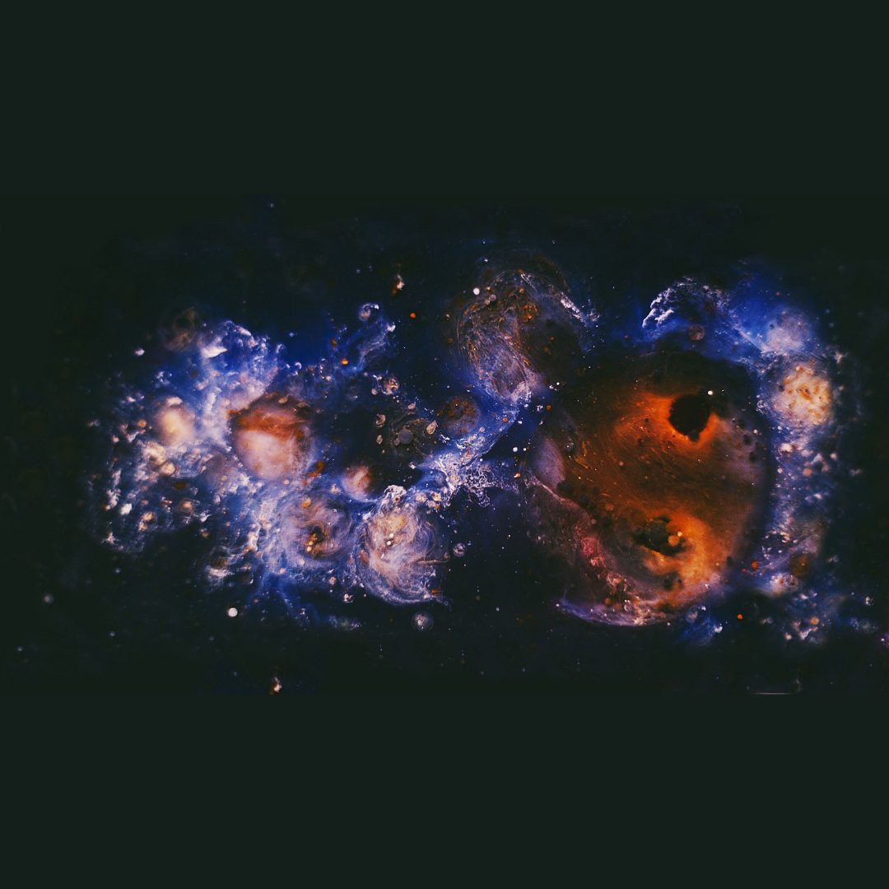

Química dos Astros: o mapa como roteiro e antecipação
 Elaine Imenes · 4 min de leitura
Elaine Imenes · 4 min de leitura

O tempo não é neutro. Ele tem estrutura, densidade e, principalmente, qualidade. Essa qualidade pode ser observada, descrita e, em alguma medida, antecipada. É a partir dessa ideia que eu organizo o que chamo de “Química dos Astros”. Não como metáfora solta, mas como uma forma de pensar a astrologia a partir de processos. O céu funciona como um campo onde essas dinâmicas estão em curso o tempo todo, e o mapa natal é a condição inicial desses processos.
Se o tempo tem qualidade, a leitura do céu não pode se limitar à reflexão abstrata. O ponto aqui é utilidade. Ler o céu é ler o que está em formação. É perceber quando um processo começa, quando ganha força e quando se encerra. Isso muda a forma como se atravessa a própria biografia. Não porque elimina o imprevisto, mas porque reduz o grau de desorientação diante dele.
Não se trata de crença. Trata-se de observação. A astrologia se sustenta na leitura de ciclos e recorrências. Como mostram os estudos históricos sobre a astrologia ocidental, essa prática sempre esteve ligada à organização da vida no tempo, seja na agricultura, na política ou nas decisões individuais (Campion, 2008; Campion, 2009; Tester, 1987). Mas esse não é o único modo de ler o céu.
Se não é o único modo de ler o céu, também não é o único modo de organizar essa leitura. É nesse ponto que a aproximação com a astronomia cultural faz sentido. Ao analisar as cosmologias indígenas brasileiras, Walmir Thomazi Cardoso mostra que a leitura do céu nunca esteve separada da vida concreta. Ela se organiza junto com o tempo, com o território e com o coletivo (Cardoso, 2015). Isso desloca o lugar da astrologia. Ela deixa de operar como um sistema fechado de interpretação e passa a operar como linguagem que organiza a experiência no tempo.
Esse deslocamento exige precisão. É nesse ponto que a retomada da técnica faz sentido. Não como apego ao cálculo, mas como busca de precisão. O que se perdeu, em grande parte, foi o vínculo com a observação direta e com a construção do raciocínio a partir do céu observado. Recuperar isso não é saudosismo. É recuperar consistência. A analogia com a química ajuda a organizar essa ideia. Quando você conhece as propriedades dos elementos envolvidos, consegue antecipar tendências de reação.
É a partir dessa lógica que a leitura astrológica se organiza. O mapa natal apresenta um conjunto de disposições. Os trânsitos e demais técnicas temporais atuam como agentes que ativam, tensionam ou reorganizam essas disposições. Não se trata de causalidade linear, mas de uma configuração de condições que a tradição técnica descreve com bastante precisão (Brennan, 2017; George, 2019). Bernadette Brady trabalha com essa ideia ao tratar o mapa como um sistema de potenciais que se manifestam ao longo do tempo. O ponto não é adivinhar eventos isolados, mas compreender a qualidade dos períodos (Brady, 1999).
Essa leitura exige técnica e, acima de tudo, precisão. Antecipar não é controlar. Conhecer um ciclo difícil não impede que ele aconteça. O que muda é a posição de quem passa por ele.
Patrick Curry aponta que a astrologia opera num campo em que símbolo e realidade não se separam de forma rígida (Curry, 1989). Isso exige rigor na leitura. Não se trata de projetar interpretações, mas de reconhecer padrões que se expressam tanto na experiência subjetiva quanto nos acontecimentos concretos.
No fim, a questão volta para um problema clássico: o que é liberdade. Baruch Spinoza trata isso de forma direta. Como ele afirma, “os homens se julgam livres porque têm consciência de suas ações, mas ignoram as causas que os determinam” (Spinoza, 2009). A liberdade não está em fazer o que se quer, mas em compreender essas causas. Nesse sentido, antecipar movimentos do próprio mapa não é submissão a um destino fechado. É condição para agir com mais precisão dentro dele.
Referências
Brady, Bernadette. Predictive Astrology: the eagle and the lark. 2. ed. York Beach: Weiser Books, 1999.
Brennan, Chris. Hellenistic Astrology: the study of fate and fortune. Denver: Amor Fati Publications, 2017.
Campion, Nicholas. A History of Western Astrology: volume I: the ancient and classical worlds. London: Continuum, 2008.
Campion, Nicholas. A History of Western Astrology: volume II: the medieval and modern worlds. London: Continuum, 2009.
Cardoso, Walmir Thomazi. O céu dos índios Tembé. São Paulo: Odysseus Editora, 2015.
Curry, Patrick. Prophecy and Power: astrology in early modern England. Cambridge: Polity Press, 1989.
George, Demetra. Ancient Astrology in Theory and Practice: volume I. Minneapolis: Rubedo Press, 2019.
Spinoza, Baruch de. Ética: demonstrada à maneira dos geômetras. Belo Horizonte: Autêntica Editora, 2009.
Tester, S. Jim. A History of Western Astrology. Woodbridge: Boydell Press, 1987.
Whitfield, Peter. Astrology: a history. London: British Library, 2001.